WeGo Humanoid Studio
Teleoperation, data collection and skill training for a humanoid robot with dexterous hands — from the delivered file to a trained skill running on the robot.
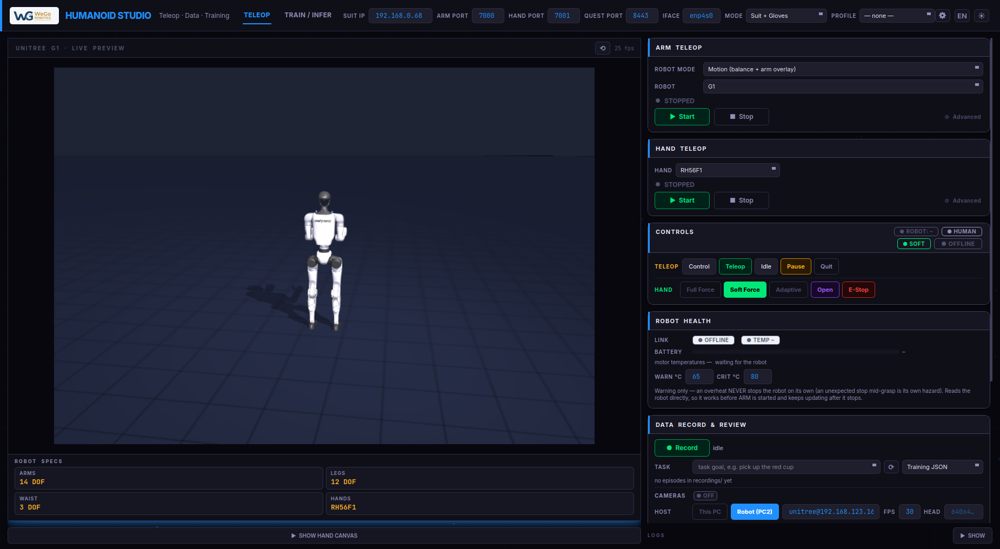
About this manual
| Audience | Operators who install and run Humanoid Studio (Unitree G1 · R1 · H2 humanoids, dexterous hands) |
| Sources | The screens and behaviour of the Humanoid Studio 2.1.0 release · the delivered INSTALL.md · TROUBLESHOOTING.md · docs/API.md |
| Read with | Unitree G1 operator manual · Unitree R1 operator manual · Unitree H2 operator manual (Korean; operating the robot itself) |
| Edition | English edition · 2026.11.18 |
| Contact | go.support@wego-robotics.com |
Contents
- 01What this system does
- 02What you received, what you need
- 03Installing
- 04Activating your licence
- 05Connecting the robot and the mocap gear
- 06First run, with nothing connected
- 07The control panel at a glance
- 08Panel reference — every control
- 09Status badges
- 10Operating the system — suit and VR headset
- 11Hand grip modes
- 12Emergency stop
- 13Recording, cameras, review & editing
- 14Training & running a skill
- 15Saved configurations
- 16Connecting your own software
- 17Safety guidelines
- 18Getting help
What this system does
An operator wearing motion-capture gear moves naturally; a humanoid robot mirrors those movements in real time — arms and individual fingers — with a live 3D preview so you always see what the robot is about to do before it moves. The same system records demonstrations, trains a skill from them, and runs that skill back on the robot through exactly the same safety path a human operator uses.
In short
- Teleoperate a humanoid's arms and hands by moving your own body and fingers.
- Preview every motion safely before the robot acts.
- Grip delicately — soft and touch-sensing modes let the hands hold fragile objects without crushing them.
- Collect data — capture demonstrations and camera footage with one click.
- Review, edit & replay — inspect any recording, trim it, and play it back.
- Train a skill from your recordings, and run it on the robot.
Supported robots and hands
The panel supports three humanoids — G1, R1 and H2 — and four dexterous hands — RH56F1, Inspire RH56DFX, BrainCo Revo2 and Unitree Dex3-1. You choose them from dropdowns and the 3D preview switches to match, so you always see the machine you are actually operating. Your delivered system has been configured and verified for your robot and hand; other combinations are selectable but should only be used with support.
What you received, what you need
Either a single archive, wego-teleop-<version>.tar.gz,
with a .sha256 checksum beside it — or a single self-extracting
file, wego-teleop-<version>-install.run. Both are built from
the same contents; the .run file is a one-step version of
"unpack, then run install.sh". Either way it is
self-contained: its own Python runtimes, robot models, hand
models, fonts and training stack. Nothing is downloaded during installation
and it does not touch any Python you already have.
| Inside the install | What it is |
|---|---|
| bin/ | The commands you run — wego-gui is the one you want, wego-license handles activation |
| env-gmr/, env-dex/, env-lerobot/ | The three bundled Python runtimes |
| assets/ | Robot and hand models, fonts, artwork, mocap SDK |
| examples/, tools/ | Reference scripts you may read and edit |
| jetson/ | The offline kit installed onto the robot |
| docs/, *.md | The rest of the documentation |
| VERSION | The build you are running — quote it in any support request |
The operator PC
| Minimum | Notes | |
|---|---|---|
| Operating system | Ubuntu 22.04 LTS, 64-bit | Newer Ubuntu usually works; older will not |
| Disk space | 25 GB free | 5.4 GB archive, 14 GB installed, plus recordings |
| Memory | 16 GB | 32 GB if you will train |
| Graphics | Any GPU with OpenGL | The 3D preview needs it |
| Training only | NVIDIA GPU + driver 550+ | 8 GB VRAM trains ACT and Diffusion; see §14 |
| Network | One wired port for the robot | A second interface (Wi-Fi) is convenient |
lsb_release -d # Ubuntu 22.04 df -h ~ # free space nvidia-smi # only if you will train — must print a driver version
nvidia/GR00T-N1.5-3B); it is downloaded
from Hugging Face on demand, only when you select it and start training — it is not in the pre-installed set
and is not version-managed.The robot side
- The robot (Unitree G1, R1 or H2), powered and reachable over Ethernet.
- The dexterous hands fitted, and — if wired to the robot's own computer — the hand bridge installed there (§5).
- Cameras, if you intend to record video with your demonstrations (§13).
The operator
- Motion-capture gear (Mocap Suit, with or without mHand Pro gloves), worn and calibrated per its own manual.
Installing
If you have the .run file
sha256sum -c wego-teleop-<version>-install.run.sha256 # verify, should print "OK" chmod +x wego-teleop-<version>-install.run ./wego-teleop-<version>-install.run ~/wego-teleop # extracts, then installs
If you have the .tar.gz
# 1. verify the download is intact (should print "OK") sha256sum -c wego-teleop-<version>.tar.gz.sha256 # 2. unpack wherever you want it to live, permanently tar xzf wego-teleop-<version>.tar.gz -C ~/ # 3. finish the installation cd ~/wego-teleop ./install.sh
Either way, the first thing you see is the licence terms —
read them and type ACCEPT to continue (one-time; a later
reinstall or update only asks again if the terms text itself changed).
Scripting an install with no one at the keyboard? Add --accept-eula
(or set WEGO_EULA_ACCEPT=1) after reading
LICENSE_TERMS.md yourself. Reprint the terms any time with
bin/wego-license --terms.
install.sh prints a line per step and ends with
Installed (<version>). If any line says !!, stop
and read TROUBLESHOOTING.md §1.
INSTALL.md) — re-extract at the new
location instead.Start the panel:
~/wego-teleop/bin/wego-gui
You should see a brief animated splash, then the control panel shown on the cover of this guide: two 3D canvases on the left, cards down the right, and a header carrying the WeGo logo, the page tabs and the connection fields.
Activating your licence
The software is licensed per computer. install.sh tells you
which case you are in.
Already licensed — nothing to do. When a package is built
for a machine you have already told WeGo about, the licence travels inside the
package; installing it is the whole activation step, and install.sh
prints who it is licensed to.
Licence does not match this computer — the package was built for a different machine than the one it was installed on. Send WeGo the Machine ID the message prints; do not reinstall, the pairing is what's wrong, not the software.
Not licensed yet — the file WeGo needs already exists.
You can do this from the panel: start bin/wego-gui and it opens a
licence window with Copy Machine ID,
Save request file… and Activate…
— activating there continues straight into the application.
# 1. produce (or reproduce) the request file ~/wego-teleop/bin/wego-license --request # → email ~/wego_machine_id.txt to go.support@wego-robotics.com # 2. install the licence file WeGo sends back ~/wego-teleop/bin/wego-license --activate ~/Downloads/your-licence.key # 3. check any time ~/wego-teleop/bin/wego-license --status
The licence is tied to this computer, not to the installation directory — it survives reinstalling, updating, renaming the computer, reinstalling Ubuntu, plugging in a docking station, and replacing a network card or disk. Moving to a genuinely different computer needs a new licence. A licence you activate yourself always takes precedence over one that came inside the package, so a renewal works without reinstalling anything.
Connecting the robot and the mocap gear
5.1 Find your network interface
Plug the robot's Ethernet cable into your PC and list the interfaces:
ip link
Look for a wired interface that is UP — typically
enp4s0, eno1 or enx…. Write it
down — this name goes into the panel's IFACE field,
and getting it wrong is the single most common cause of "the robot does not
respond".
5.2 Give your PC an address on the robot's network
The robot uses the 192.168.123.x network.
sudo ip addr add 192.168.123.222/24 dev enp4s0 # your interface name sudo ip link set enp4s0 up ping -c3 192.168.123.164 # the robot's onboard computer
5.3 Confirm the robot is actually talking
~/wego-teleop/bin/wego-gmr robot_telemetry enp4s0 # your interface name
It prints joint temperatures and battery percentage, roughly once a second.
If it prints nothing, the robot is not reaching you and no amount of pressing
Control will help — see
TROUBLESHOOTING.md §2.
5.4 Enter it in the panel
In the header, set IFACE to your interface name. The ROBOT HEALTH card starts showing battery and temperature within a few seconds — that is your positive confirmation the link is live.
Connecting the motion-capture gear
| MODE | Your gear | Ports used |
|---|---|---|
| Suit (all-in-one) | One suit, gloves worn on the suit | ARM PORT 7000 only |
| Suit + Gloves | Suit body without gloves, separate mHand Pro gloves | ARM PORT 7000 + HAND PORT 7001 |
| VR (Quest / PICO) | Meta Quest 3 / 3S or PICO 4 Ultra worn by the operator, no suit (§10, VR mode) | 8443 (TCP) + 8444 (UDP), over Wi-Fi |
Set SUIT IP to the address your mocap software streams
from (192.168.0.68 by default). Choose MODE before
starting anything — it configures both the arm and hand sides at
once; switching afterwards means stopping and restarting them.
First run, with nothing connected
Before involving the robot, confirm the panel itself works.
- Start the panel.
- In the ARM TELEOP card, open ⚙ Advanced and tick SIM ONLY, then press ▶ Start.
- The left canvas shows the robot; the hand close-up (below it, via ▶ SHOW HAND CANVAS) shows the hands.
- Move — the on-screen robot follows. Nothing else is being commanded.
- Press ■ Stop.
If the canvases stay empty, your mocap gear is not streaming (§5). If the
panel itself will not start, see TROUBLESHOOTING.md §1.
--no-robot — it guarantees zero DDS traffic to any robot. It is
the safest way to check tracking and is the only screenshot state used
throughout this guide.The control panel at a glance
The application has two pages, switched from the header: TELEOP and TRAIN / INFER.
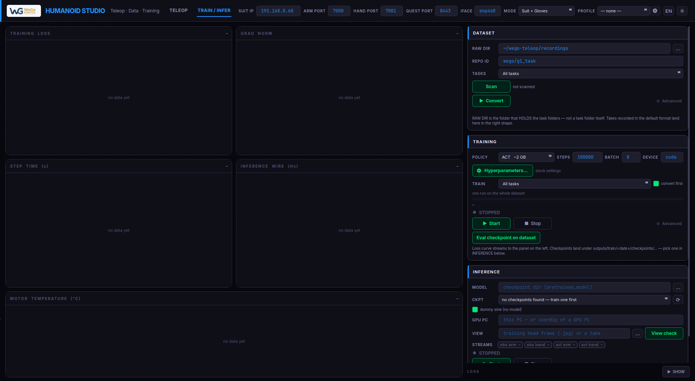
The header is shared by both pages: profile, network fields, the EN / 한 language and ☀ / ☾ theme buttons, and the ⚙ button that opens the Configuration window, where every setting can be seen and saved.
Panel reference — every control
This section names every control, card by card. Skip it on a first read; come back when you want to know exactly what something does.
8.1 ARM TELEOP card
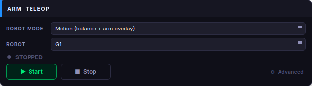
| Control | What it does |
|---|---|
| ROBOT | Which humanoid you are operating (G1 / R1 / H2) |
| ROBOT MODE | Motion — the robot balances itself, we drive only the arms (the normal choice). Debug — we drive every joint directly and the robot must be supported or hung; the panel asks you to confirm |
| ▶ Start / ■ Stop | Start or stop the arm module. Starting does not move the robot |
| ⚙ Advanced | Reveals the exact command this card runs and a SIM ONLY checkbox (§6). For support use — the controls above already drive everything that matters |
8.2 HAND TELEOP card
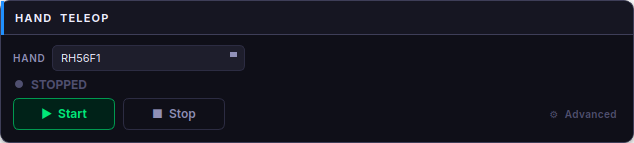
| Control | What it does |
|---|---|
| HAND | Which hand model is fitted (RH56F1 / Inspire RH56DFX / BrainCo Revo2 / Unitree Dex3-1) |
| ▶ Start / ■ Stop | Start or stop the hand module. Preview streams immediately; the real hand stays gated until Teleop |
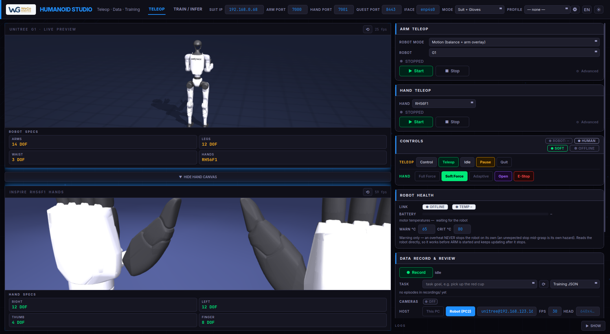
8.3 CONTROLS card
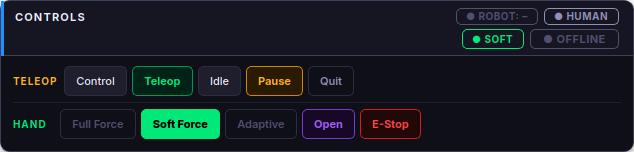
Two rows of status badges (§9) and the buttons that actually move the robot:
| Button | What it does |
|---|---|
| Control | First real motion. The robot eases into its neutral ready posture over about three seconds |
| Teleop | Start following you. Ramps in over about two seconds from wherever the robot currently is, tracking you as it goes |
| Idle | Stop following and return to the ready posture |
| Pause | Hold the current pose and stop following |
| Quit | Release the arm and shut the arm module down cleanly |
| Full Force / Soft Force / Adaptive | Hand grip mode — see §11 |
| Open | Immediately open both hands and release whatever is held |
| E-Stop | Emergency stop (E-stop) — see §12 |
8.4 ROBOT HEALTH card
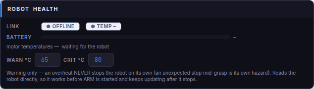
Read directly from the robot, independently of everything else — it works before you start the arm and keeps updating after you stop it.
| Item | Meaning |
|---|---|
| LINK | Whether the robot's status messages are arriving |
| BATTERY | Charge percentage |
| Motor temperature | The hottest motor, with a chart on the TRAIN / INFER page |
| WARN °C / CRIT °C | Your thresholds (65 / 80 by default) |
Crossing the critical threshold turns the badge red and names the hottest joint in the log. It never stops the robot on its own — an unexpected stop mid-grasp is its own hazard.
8.5 DATA RECORD & REVIEW card
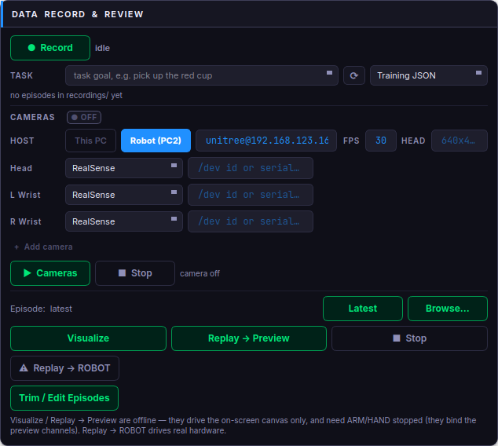
| Control | What it does |
|---|---|
| TASK | The instruction being demonstrated, e.g. pick up the red cup. Stored with every recording |
| Format | Training JSON (default, trainable), HDF5 (review and replay only), or Nero HDF5 (trainable; the Nero project's format, one file per take, with ✓ Save as success / ✗ Save as fail buttons under Record — failed takes are left out of Convert) |
| ● Record | Start / stop a demonstration |
| CAMERAS: HOST | Robot (PC2) — the shipped arrangement, or This PC |
| Head / L Wrist / R Wrist | One row per camera: type (RealSense/OpenCV) + identifier. Blank = not used |
| + Add camera | Add another camera — no fixed limit |
| ▶ Cameras | Start the cameras and open a preview |
| Browse… / Latest | Choose which recording the review buttons act on |
| Visualize | Full review view — 3D robot, every joint signal and camera video on one scrubbable timeline |
| Replay → Preview | Play a recording on the on-screen preview only |
| ⚠ Replay → ROBOT | Play a recording back on the real robot, behind every normal safety gate |
| Trim / Edit Episodes | Open the episode editor — §13 |
8.6 DATASET / TRAINING / INFERENCE cards (TRAIN / INFER page)
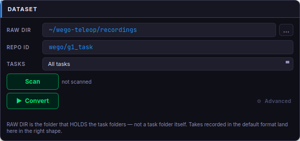
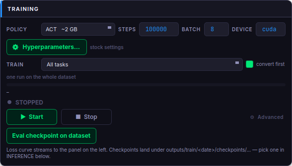
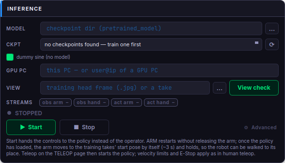
8.7 Configuration window (⚙)
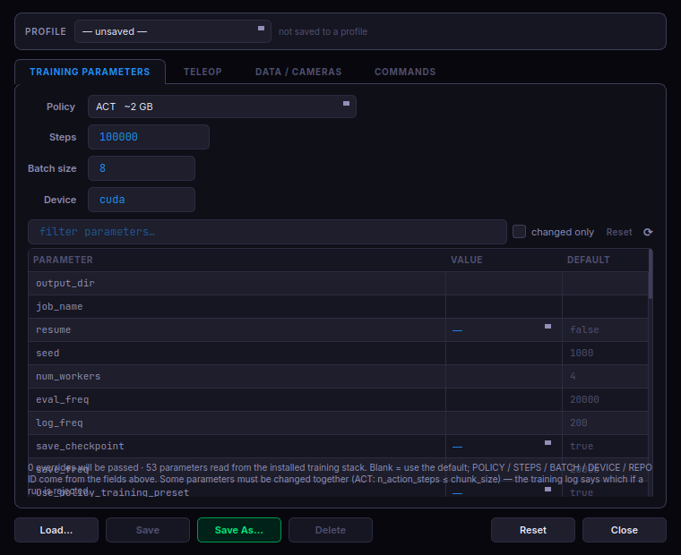
One window, four tabs — TRAINING PARAMETERS, TELEOP, DATA / CAMERAS, COMMANDS — holding every operator-settable value in the application. Along the bottom: Load… Save Save As… Delete Reset Close. These act on named profiles (§15). Edits apply immediately; Reset restores the state from when you opened the window.
8.8 Keyboard
R on a 3D canvas resets the camera view (the ⟲ button does the same). The canvases can also be rotated by dragging and zoomed with the scroll wheel.
Status badges
The CONTROLS card carries two rows of badges — the fastest way to see what the system is actually doing.
Row 1 — what is connected
OFFLINE MOTION DEBUG SIM (no robot)
| OFFLINE | The arm module is not running |
| MOTION | The robot balances itself; we drive the arms |
| DEBUG | We drive every joint; the robot must be supported |
| SIM (no robot) | Preview only — no robot is being contacted |
| HUMAN / REPLAY / POLICY | Who is commanding: you, a recording, or a trained skill |
Row 2 — what the arm is doing
| OFFLINE | Not running |
| READY (released) | Running, but the robot is not being driven — the state right after Start |
| CONTROL | Moving to the neutral ready posture |
| SYNCING… | Easing into following you |
| TELEOP | Following you |
| IDLE | Back at the ready posture, not following |
| PAUSE | Holding position |
| E-STOP (damp) | E-stop was pressed |
Alongside them, the hand's current grip mode. The default badge reads
● SOFT and, once you pick a mode, always
switches to the internal mode key in English — ● FULL,
● SOFT or ● ADAPTIVE — even when the rest of the
interface is set to Korean.
Operating the system
The system is designed so the robot never moves unexpectedly. You move through a few clear stages, and the robot only acts when you tell it to.
Step 1 — Start the preview
Press ▶ Start on the ARM card, and on the HAND card. The robot does not move — you see the live 3D preview follow you. Use this stage to confirm the preview tracks you correctly and that you are in a comfortable starting posture. You may connect the robot now or later; connecting it does not move it.
Step 2 — Take control
Press Control. The robot smoothly moves into a
neutral ready posture over about three seconds — it eases in, there is never a
jump. If the robot does not move and the log says it cannot engage, the panel
is telling you it is not receiving the robot's position and is refusing to
move it blind. See TROUBLESHOOTING.md §2.
Step 3 — Match and engage
With the robot in its ready posture, position your own body to match it. Then press Teleop. Over about two seconds the robot transitions to following you, tracking you as it goes — no jump even if you move during the transition.
Step 4 — Teleoperate
Move naturally. Your arm and finger motions are reflected in real time. How the motion feels is adjustable in the Configuration window: following you more aggressively is more responsive and less smooth; following more gently is smoother but will not keep up with fast motion.
Step 5 — Pause or stop
- Pause holds the robot in place while you reposition yourself.
- Idle returns the robot to its ready posture and stops following.
- E-Stop immediately stops all motion (§12).
- ■ Stop ends the modules. This is not an E-stop.
VR mode (Meta Quest) — R1
Instead of the suit, the operator can wear a Meta Quest 3 / 3S or PICO 4 Ultra and drive the robot's arms and hands with the two controllers. The headset runs the Humanoid Studio VR app (in Korean): it shows the robot, an alignment guide and the robot's state. These steps are written for R1; G1 and H2 work the same way except where the R1 notes say otherwise.
Before you start
- The headset and the PC are on the same Wi-Fi network. The headset connects to the PC on port 8443 (TCP) and finds it through a broadcast on port 8444 (UDP); a firewall on the PC must allow both.
- The headset stays with the PC it first connected to, even when another Humanoid Studio runs on the same Wi-Fi. The console's bottom line shows the robot and PC it is on, and any other PC it hears. To move it to another PC, press CHANGE PC on the console twice. A PC that already has a headset refuses a second one.
- The robot is connected as usual (IFACE), standing and balancing.
- R1's BrainCo hands are driven by the hand service on the robot's own PC
(
192.168.123.164), which starts by itself when the robot boots.
Start
- On the PC, set MODE to VR (Quest / PICO), ROBOT to R1 and ROBOT MODE to Motion, then press ▶ Start on the ARM card. Set HAND to BrainCo Revo2 and press ▶ Start on the HAND card too.
- Put the headset on and open Humanoid Studio VR from the app library (apps not from the store are listed under Unknown sources). It finds the PC by itself: the LINK chip turns green and the ROBOT chip shows R1.
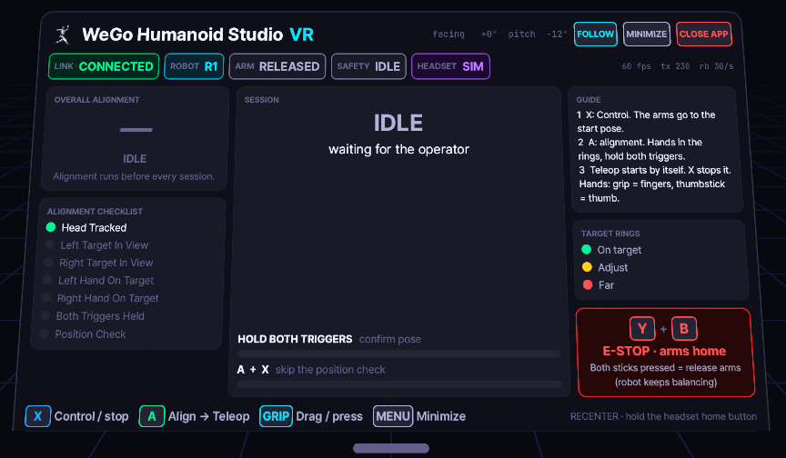
Controller buttons
| Button | What it does |
|---|---|
| X | Control: the arms move to the start pose over about three seconds. During teleoperation, X stops following and returns the arms to the start pose |
| A | Starts alignment; teleoperation begins by itself once you are aligned |
| Grip (side button) | Closes all four fingers of the robot hand together |
| Thumbstick (move, don't press) | Moves the robot's thumb: toward the palm rotates it across the palm, forward bends it. Centred = half way |
| Y + B | E-stop: following stops, the arms return home and the hands open |
| Both thumbsticks pressed | On R1 in Motion: releases the arms to the robot's own controller (raised arms may drop); the robot keeps balancing. In Debug, and on G1 and H2: the robot goes limp (damp). The hands open |
| Grip (pointing at a panel, outside teleoperation) | Drag a panel, or press its button |
| Menu (left) | Minimize the console |
| Hold the headset's home button (Meta / PICO) | Recenter the view |
| CLOSE APP (red, top right of the console) | Point and press grip twice within 3 s to quit the app. Hidden during teleoperation |
A session
- Stand relaxed, then press X. The robot's arms move to the start pose.
- Press A. Two rings appear where the robot's wrists are. Put your hands in the rings and hold both triggers until the gauge reaches 100%. The headset tells you which way to move each hand. If the position check will not pass, keep the triggers held, hold A and add X to skip it.
- Teleoperation starts by itself and the console shrinks to a status strip. Move naturally; the arms follow your controllers and the hands follow your grip and thumbstick. The hands move only during teleoperation.
- To stop, press X: the arms return to the start pose and the hands keep their grip. Press A to align and continue again.
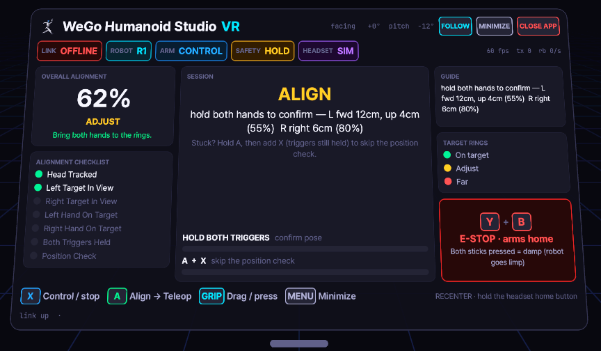
If the headset warns that your hands are off the robot's forward direction, face forward or hold the headset's home button (Meta / PICO) to recenter.
R1 notes
- The robot camera panel stays empty on R1: its camera feed is not supported in VR mode yet.
- A finger that stops against an object, or against the thumb, stays there until you ease off: release the grip a little, or move the thumb back, then try again.
- On R1 in Motion, the thumbstick combination only releases the arms. To stop the whole robot, use the robot's own remote control.
Hand grip modes
Three modes, switchable at any time — including mid-grasp.
| Mode | Behaviour |
|---|---|
| Full Force | Maximum strength, for firm grasping of solid objects |
| Soft Force (default) | Gentle, compliant grasping. The hand senses contact and stops closing, so it holds fragile or delicate items without crushing them |
| Adaptive | Uses the hand's touch sensors: feels first contact, tests how soft the object is, holds accordingly, and tightens slightly if it starts to slip |
Open immediately releases whatever is held.
Emergency stop
The E-Stop button is always available on the control panel.
- stops driving the robot's arms and lets them go slack,
- opens the hands to release any held object,
- returns the system to a safe, idle state.
Important: E-stop makes the robot stop being driven. It does not catch or hold the robot up. On a robot that is not balancing on its own (Debug mode), the robot must already be supported.
Recording, cameras, review & editing
The system captures your teleoperation sessions as reusable datasets — the robot's full motion together with synchronized camera video.
To record
- Start the cameras first, if you want video (§8.5).
- Teleoperate as normal (§10).
- Type or choose the TASK — a plain instruction such as "pick up the red cup". This wording is stored with the recording and is what a trained skill later learns to associate with the behaviour.
- Press ● Record to begin.
- Perform the demonstration.
- Press ■ Stop Recording to finish. Each demonstration saves automatically.
Empty or accidental recordings are discarded. Choose a different task from the dropdown at any time between demonstrations — no restart needed. Always pick an existing task from the list rather than retyping it: "pick up cup" and "pick up the cup" become two separate tasks.
What makes a good dataset
- Consistency beats volume — demonstrate the task the same way each time.
- Trim the dead air — the seconds before/after teach the skill to do nothing.
- Vary what should vary — move the object between takes if its position matters.
- Twenty to fifty clean demonstrations is a realistic starting point for a single-task skill.
Cameras
Optional for teleoperation, required for training a skill that uses vision. In the CAMERAS section: set HOST (Robot PC2 or This PC), fill in a type + identifier per camera row (RealSense → serial number; OpenCV → device number), and press ▶ Cameras.
15 (resolution is unchanged, only the
rate drops; USB 3 is fine at 30). A camera can also be held by another
program — on the robot, a factory service may already own the head camera
(Device or resource busy); see TROUBLESHOOTING.md
§5.Reviewing and editing
Choose a recording with Browse… or Latest, then Visualize for a full scrubbable timeline (3D robot + every joint + camera video together — this is how you confirm a recording is complete before training on it), or Replay → Preview to play it on the 3D preview without touching the robot.
The episode editor (Trim / Edit Episodes)
| Button | What it does |
|---|---|
| ▶ Play / ❚❚ Pause | Play the episode or the selection |
| Loop: whole episode / selection | What playback repeats |
| Select all | Select the whole episode |
| Keep selection | Keep the selected range, discard the rest |
| Delete selection | Delete the selected range, keep the rest |
| Delete episode | Remove this demonstration entirely |
Training & running a skill
1. Prepare the dataset
On the DATASET card: set RAW DIR to the folder holding your task folders (not a task folder itself), give the dataset a REPO ID, tick which TASKS to include, and press ▶ Convert. Press Scan first if you want to know what is there before spending time on it.
2. Train
Choose POLICY, STEPS and
BATCH, then ▶ Start. Live charts show
progress; the panel estimates remaining time and reports the best result so
far. ⚙ Hyperparameters… opens every other setting;
the card shows stock settings or N overrides active
so a modified run is never invisible.
| Policy | Needs about | On an 8 GB card |
|---|---|---|
| ACT | 2 GB | Yes |
| Diffusion | 3 GB | Yes |
| VQ-BeT | 4 GB | Yes |
| SmolVLA | 12 GB | No |
| π0 / π0.5 / GR00T (research only, non-commercial) | 45 GB | No |
Estimates for a full fine-tune; batch size, camera count and image resolution move them. Some model types learn a single task; others follow a spoken instruction across many and train one combined run. Your recordings are model-agnostic: record once, train more than once.
GR00T is research only (non-commercial): NVIDIA releases the GR00T-N1.5-3B weights for non-commercial use only, so WeGo does not provide GR00T as a commercial feature (see §2).
3. Check the result
Eval checkpoint on dataset replays recordings through the trained skill and reports the error per joint against what you actually did. More than about 2° of average arm error on the very episodes it trained on means something is wrong upstream — more training steps will not fix it. Look at the demonstrations first.
4. Run the skill on the robot
Select the skill under CKPT and press ▶ Start on the INFERENCE card. The arm module restarts without releasing the arm. Once the skill has loaded, the arm moves by itself (about 3 s) to the pose your training recordings start from and holds it, so keep that space clear. Then walk the robot to the place where the recordings were made: a skill only knows the scene it was trained on. View check lays a training head-camera frame over the live head camera and tells you which way to move until they line up. The skill moves the robot only after you press Teleop, and then starts at once from that pose. It takes exactly the place your motion capture normally occupies, so every safeguard stays in force: the same speed limits as manual teleoperation, and E-stop remains live throughout. Cameras must be running if the skill was trained with camera images. A skill that needs a stronger graphics card can run on another PC: enter it under GPU PC on the INFERENCE card.
Saved configurations
Every setting — robot, hand, network, cameras, task, dataset, training options, and every training hyperparameter — can be saved as a named profile and reloaded from the header in one click.
- Save As… stores the current setup under a name.
- Load… switches to a stored setup.
- The panel reopens on the profile you used last.
— unsaved —in the header means the current settings are not stored anywhere.
Keep one profile per rig. A profile written by an older version keeps whatever settings it does not know about, so upgrading never blanks your setup.
Connecting your own software
This chapter is for your engineers. Nothing in it is needed to operate the system — but if you want to log the data elsewhere, drive the robot from your own controller, or plug the robot into software you already have, this is how.
The system is not a closed box. Everything it sees, commands and measures is published live on ordinary ZeroMQ sockets that any program on the PC can read, and your own program can publish commands back the same way. There is no SDK to install and no licence key involved: ZeroMQ has bindings for Python, C++, C#, Java, MATLAB and ROS nodes, and the messages are plain arrays of 32-bit floating-point numbers.
What is published
| Port | What you get |
|---|---|
| 5559 | Command — the operator's full-body motion, retargeted onto the robot |
| 5560 | Command — the hand pose being sent to the hands |
| 5561 | Measurement — each arm joint's real position, speed and torque |
| 5562 | Measurement — each hand's real finger positions and grip force |
| 5564 | The raw human hand pose (21 points per hand) before any robot conversion |
| 5563 | The glove's wrist orientation |
| 5555 | The camera images (JPEG, with a capture timestamp) |
Battery level and motor temperatures come from the robot's own network interface rather than these sockets — which is why the panel can show robot health before you start anything.
Reading a stream is about five lines:
import zmq, numpy as np
sub = zmq.Context().socket(zmq.SUB)
sub.setsockopt(zmq.SUBSCRIBE, b"")
sub.connect("tcp://127.0.0.1:5561") # measured arm state
while True:
print(np.frombuffer(sub.recv(), dtype=np.float32))Subscribing costs the system nothing and cannot disturb operation: a subscriber that falls behind simply misses samples.
Commanding the robot from your own program
Your software can also take the operator's place: publish target positions on ports 5565 (body) and 5566 (hands) and the robot follows them. This is the same path a trained skill uses.
The robot does not move until the operator presses Control and then Teleop; per-joint speed limits apply; and E-Stop works throughout. There is no interface that bypasses those safeguards, by design.
Recorded sessions
Recordings are open too — plain JSON plus JPEG files (or HDF5), documented field by field. Each episode is self-describing: which robot and hand recorded it, what the cameras were, what the task instruction was, and what every value means. You can read them with your own tools, without this application.
Trying it before you have hardware
A synthetic publisher ships with the system: it puts plausible data on every port with no robot, no motion capture and no cameras attached. Your integration can be written and tested against it, and moving to the real system means starting a different program, not changing your code. A stream checker lists every port with its live rate, so “is the robot publishing?” and “is my program wrong?” are never confused.
Where the details are
| Document | Contents |
|---|---|
docs/API.md | Complete specification — every stream, exact layout, units, and the array sizes for each robot and hand |
examples/README.md | Runnable example programs, one per stream, plus the synthetic publisher and the stream checker |
docs/joint_names.json | Machine-readable joint names and index maps |
The examples need only pip install pyzmq numpy and run on any
Python 3.8 or newer — they do not import this application.
Array sizes depend on which robot and which hand you are using. Read the length from the message rather than assuming it, and the same program works across the whole range of supported hardware.
Safety guidelines
- Keep the working area clear of people and obstacles during operation.
- Always start with the preview stage to confirm tracking before engaging.
- Engage control (Control, then Teleop) only when you have space and are ready.
- Keep the E-stop within reach at all times.
- Use Soft Force or Adaptive grip for any fragile, soft or unknown object.
- In Debug robot mode the robot cannot hold itself up — it must be supported or hung before you start.
- Treat a trained skill like a new operator: first runs in clear space, hand on the E-stop.
- If anything looks or feels wrong, press E-stop first, then assess.
Getting help
Problems and their fixes are collected in TROUBLESHOOTING.md.
If a problem persists, contact your WeGo Robotics representative with:
- The contents of
VERSIONin your installation directory. - What you did, what you expected, and what happened instead.
- The panel's log: open the log panel at the bottom of the page and copy the last screenful, or attach the terminal output if you started it from one.
go.support@wego-robotics.com